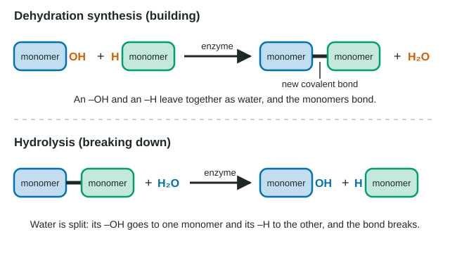

Introduction to Macromolecules
Macromolecules are large molecules; most are polymers, chains of monomers joined by covalent bonds.
Part 1 · Hook
Why this matters
A slice of bread, a steak and a spoonful of peanut butter are made of large molecules, thousands of atoms long, that your body cannot absorb whole. Within hours your digestive system has cut them into small pieces, and within days your cells have stitched many of those same pieces into new large molecules of your own: muscle, hair, enzymes. Cutting and stitching both use one small molecule as their tool: water.
Part 2 · Before you start
What this builds on
Part 3 · Prerequisite check
Quick check before you start
1. What is a hydroxyl group?
- –OH, a polar group attached to a carbon skeleton
- –COOH, an acidic group
- –NH2, a basic group
Show the answer
A hydroxyl group is –OH. It is polar and is found on sugars; carboxyl is –COOH and amino is –NH2.
- Correct: –OH, a polar group attached to a carbon skeleton:
- –COOH, an acidic group:
- –NH2, a basic group:
2. Which family of molecules is built from amino acids?
- Carbohydrates
- Proteins
- Lipids
Show the answer
Amino acids are the building blocks of proteins; carbohydrates are built from sugars.
- Carbohydrates:
- Correct: Proteins:
- Lipids:
3. What do the atoms in a covalent bond share?
- Protons
- Neutrons
- A pair of electrons
Show the answer
A covalent bond is a shared pair of electrons between two atoms.
- Protons:
- Neutrons:
- Correct: A pair of electrons:
Part 4 · See it
See it first

Part 5 · Step by step
How it works, step by step
- Cells need large molecules for storage, structure and information, but can take in and move only small ones.They build large molecules (polymers) by linking small, similar units (monomers) into chains.
- To join two monomers, one gives up an –OH and the other an –H.The –OH and –H leave together as a water molecule, and a new covalent bond links the two monomers: dehydration synthesis.
- Each new link in a chain releases one water molecule.A straight chain of n monomers is held together by n − 1 bonds and its synthesis releases n − 1 water molecules.
- To take a polymer apart, a water molecule is added across a bond between monomers.The –H goes to one monomer and the –OH to the other, the bond breaks, and the monomers are freed: hydrolysis.
- Both reactions are slow on their own.Enzymes, proteins that speed up reactions, carry out dehydration synthesis and hydrolysis fast enough for life.
Part 6 · Key ideas
Key ideas
- A monomer is one building block; a polymer is a long chain of monomers joined by covalent bonds. Carbohydrates, proteins and nucleic acids are polymers; lipids are large molecules but not chains of repeating units.
- Dehydration synthesis builds: monomer + monomer → longer chain + water. Hydrolysis breaks: polymer + water → shorter pieces. "Dehydration" means water is removed; "hydro-lysis" means splitting with water.
- Counting rule: a straight chain of n monomers has n − 1 links, so making it releases n − 1 water molecules and breaking it down completely uses n − 1.
- Structure determines function: the same monomers, linked in a different order or a different way, give molecules with different shapes, and shape decides what a molecule can do.
Part 7 · Misconception
A common mistake
The wrong idea: Dehydration synthesis means a polymer is dried out, and hydrolysis means it dissolves in water.
What actually happens: Both names describe what happens to a water molecule in the reaction. In dehydration synthesis, the atoms of one water molecule (an –H from one monomer and an –OH from the other) are removed as each bond forms. In hydrolysis, a water molecule is split and its atoms are added to the two pieces as the bond breaks. Neither has to do with how wet or dry the molecule is.
Part 8 · Check yourself
Check yourself
Exam-style questions. Anything you miss goes into your review queue.
1. When two monomers are joined by dehydration synthesis, where do the atoms of the released water molecule come from?
- Both hydrogens and the oxygen come from one monomer, which loses a small piece of itself.
- An –OH group from one monomer and an –H atom from the other monomer.
- From the surrounding water, which is split so that the monomers can attach to each other.
- From an enzyme, which donates an –OH and an –H each time it joins two monomers together.
Show the answer
In dehydration synthesis one monomer loses –OH and the other loses –H. They combine as H2O, and a covalent bond forms between the monomers.
- Both hydrogens and the oxygen come from one monomer, which loses a small piece of itself.: The atoms come from both monomers: an –OH from one and an –H from the other.
- Correct: An –OH group from one monomer and an –H atom from the other monomer.: Correct. Together they make H2O, and the two monomers bond where those atoms were.
- From the surrounding water, which is split so that the monomers can attach to each other.: Splitting water is hydrolysis, which breaks bonds. Dehydration synthesis releases a water molecule.
- From an enzyme, which donates an –OH and an –H each time it joins two monomers together.: Enzymes speed up the reaction but do not give their own atoms to the water.
2. A medicine blocks the gut enzyme that hydrolyzes a sugar polymer in food. A person takes it with a meal containing that polymer. Which result is most likely?
- More of the polymer stays intact, so fewer sugar monomers are absorbed into the blood after the meal.
- The polymer is absorbed into the blood whole, raising the sugar level in the blood faster than usual.
- The polymer is broken down by dehydration synthesis instead, giving the same amount of monomers.
- The body makes more water, which breaks the polymer down without the enzyme.
Show the answer
Digestion is hydrolysis speeded up by enzymes. Block the enzyme and the polymer stays too big to absorb, so less sugar reaches the blood. (Some real medicines work this way.)
- Correct: More of the polymer stays intact, so fewer sugar monomers are absorbed into the blood after the meal.: Correct. Without hydrolysis the polymer is not cut into monomers, and only small monomers are absorbed.
- The polymer is absorbed into the blood whole, raising the sugar level in the blood faster than usual.: Large polymers are not absorbed whole; that is why they must be hydrolyzed first.
- The polymer is broken down by dehydration synthesis instead, giving the same amount of monomers.: Dehydration synthesis builds polymers; it does not break them down.
- The body makes more water, which breaks the polymer down without the enzyme.: Plenty of water is already present. Without the enzyme, hydrolysis is far too slow to matter.
3. Two polymers are each made only of the same six-carbon sugar monomer. One dissolves easily and is quickly broken down by animals; the other forms tough fibers that most animals cannot break down. Which explanation is best?
- One polymer contains a second kind of monomer that the other lacks, which changes its properties.
- The monomers are linked in different ways, so the two chains have different shapes and properties.
- The fibrous polymer has many more monomers, and long chains of a polymer are hard to break.
- The fibrous polymer formed by hydrolysis and the soluble one formed by dehydration synthesis.
Show the answer
When monomers are the same, the difference must lie in how they are put together. A different link between monomers changes the chain's shape, and shape decides properties and which enzymes fit.
- One polymer contains a second kind of monomer that the other lacks, which changes its properties.: The question states that both are made only of the same monomer.
- Correct: The monomers are linked in different ways, so the two chains have different shapes and properties.: Correct. Structure determines function: a different link between the same monomers changes the chain's shape, how it packs and which enzymes can cut it.
- The fibrous polymer has many more monomers, and long chains of a polymer are hard to break.: Chain length alone does not decide this; some very long sugar polymers are digested easily.
- The fibrous polymer formed by hydrolysis and the soluble one formed by dehydration synthesis.: Both are polymers, so both were built by dehydration synthesis; hydrolysis breaks polymers down.
Model
Counting monomers, bonds and water
Use the model in the figure. Each monomer in the questions below is a six-carbon sugar with the formula C6H12O6 and a mass of 180 daltons; a water molecule has a mass of 18 daltons. Every link between two monomers forms by dehydration synthesis.
4. How many water molecules are released when 25 monomers are joined into one straight, unbranched chain?
Type a number in water molecules.
Show the answer
A straight chain of 25 monomers has 24 links, and each link releases one water molecule: 25 − 1 = 24.
- Answer: 24 water molecules
5. What is the mass, in daltons, of that straight chain of 25 monomers?
Type a number in daltons.
Show the answer
Start with 25 × 180 = 4,500 daltons of monomers, then subtract the 24 waters released: 24 × 18 = 432. 4,500 − 432 = 4,068 daltons.
- Answer: 4068 daltons
6. Some cells make a ring of 8 sugar monomers, in which the last monomer is also linked to the first. How many water molecules are released in making the ring from 8 free monomers?
- 7
- 8
- 9
- 16
Show the answer
Count links, not monomers. A straight chain of n has n − 1 links; joining its two ends adds one more, so a ring of n has n links and releases n waters.
- 7: 7 is the count for a straight chain of 8. Closing the ring adds one more link.
- Correct: 8: Correct. A ring of 8 monomers has 8 links (the chain's 7 plus the one closing the ring), and each link releases one water.
- 9: A ring of 8 monomers has 8 links, one per monomer, not 9.
- 16: Each link releases one water molecule, not one per monomer per side.
7. A branched polymer of 40 sugar monomers has three side branches, and every monomer is part of one molecule with no rings. How many links between monomers does it have?
- 36
- 39
- 40
- 42
Show the answer
Build the molecule one monomer at a time: each new monomer, wherever it attaches, adds exactly one link. So a molecule of n monomers with no rings always has n − 1 links, branched or not.
- 36: Branches do not remove links; every monomer still needs to be attached to the molecule.
- Correct: 39: Correct. Each monomer after the first joins the molecule by one new link, whether on the main chain or a branch: 40 − 1 = 39.
- 40: 40 links would close a ring somewhere, and the polymer has no rings.
- 42: Where a branch starts, one monomer carries an extra bond, but it also starts the branch's first link; the total is still one per added monomer.
8. Two C6H12O6 monomers are joined by dehydration synthesis. What is the formula of the two-monomer product?
- C12H24O12
- C12H22O11
- C12H20O10
- C12H24O11
Show the answer
Atoms are conserved: 2 × C6H12O6 = C12H24O12. The reaction releases one H2O, leaving C12H22O11, the formula of table sugar.
- C12H24O12: This is just the two monomers added together. One water molecule (H2O) leaves when the bond forms.
- Correct: C12H22O11: Correct. C12H24O12 minus H2O gives C12H22O11.
- C12H20O10: This removes two water molecules, but joining two monomers makes one bond and releases one water.
- C12H24O11: Water leaving takes two hydrogens and one oxygen, not just one oxygen.
Part 9 · Summary
Summary
Macromolecules are large molecules; most are polymers, chains of monomers joined by covalent bonds. Dehydration synthesis joins two monomers by removing an –OH from one and an –H from the other as water; hydrolysis breaks the bond by adding water back. A chain of n monomers needs n − 1 bonds. Enzymes speed up both reactions. Carbohydrates, proteins and nucleic acids are polymers; lipids are not. How the monomers are arranged sets a molecule's shape, and its shape sets its function.
Part 10 · Up next
What comes next
Part 11 · Connections